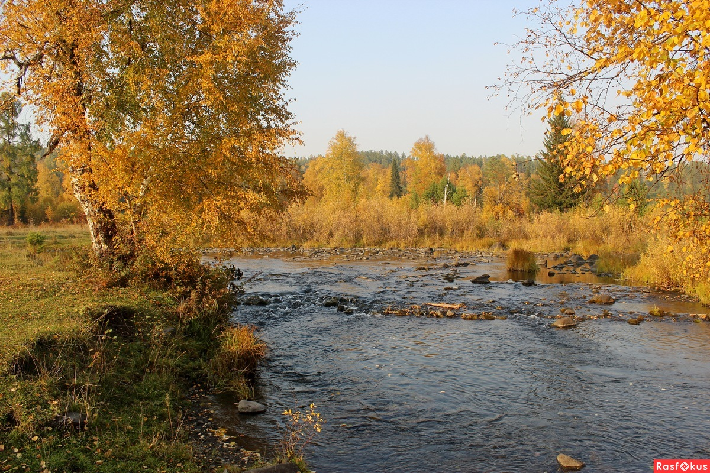

Сайт студента ТГПУ
Сайт студента ТГПУ
Васильев Степан БХФ 103 группа
Здравствуйте, я родился в Красноярском крае, Богучанском районе, в селе, именуемом Богучанами. Но жил в посёлке, расколоженном в 70 км от этого села, в Невонке.
 Этот посёлок насчитывает около двух тысяч человек. В нём имеются своя больница и школа. Около девяти магазинов и тому подобных вещей. В нём я прожил полностью до 8 класса, включительно, но потом я поступил в школу-интернат для одарённых детей, которая называется Школа космонавтики.В Школе космонавтики я проучился 3 года, то есть с 9 по 11 класс. Учился я там в профильном биолого-химическом классе, и там я решил, что хочу преподавать биологию детям, поэтому пошёл на БХФ ТГПУ!